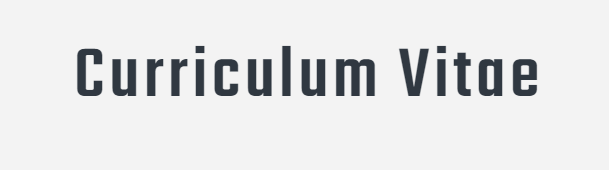

Índice
Datos Personales
- Nombre
- Marta
- Apellidos
- Albarracín Martín
- Dirección
- Calvo Sotelo 82, Arroyo De La Encomienda
- Valladolid, 47195.
- Teléfono
- +34 721 705 645
- Correo electrónico
- umarovaesmira@hotmail.com
Ir a inicio.
- Estudios realizados
- Ingeniería Industrial, Universidad Politécnica de Valencia | 2017 - 2020
- Grado Superior en Jardinería | 2016 - 2017
- Bachillerato, Colegio San Juan Bosco, Murcia | 2010 - 2014
- Secundaria, Colegio San Francisco, Marbella | 2010 - 2014
- Cursos realizados
- Curso textil, piel y cuero, Málaga
- Curso cocina India, Madrid
Ir a inicio.
Experiencia Laboral
- Auxiliar de matemáticas 3º Universidad
- Universidad Politécnica de Valencia, Valencia
- Junio 2021 - Abril 2022
- Jefe de cocina y camarero
- Amici Italian Restaurant, Málaga
- Marzo 2019 - Abril 2020
Ir a inicio.
Datos de Interés
Tengo una completa disponibildad horaria actualmente, por lo que podría entrar cuanto antes.
Carnet de conducir B, dispongo de vehículo propio.
Mis redes sociales:
Ir a inicio.
 Twitter
Twitter